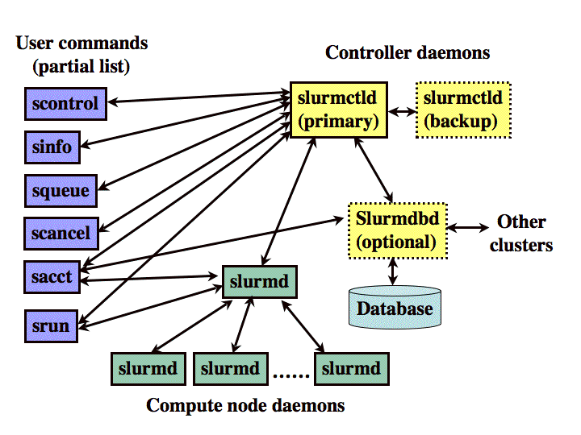

SLURM Simple Linux Utility for Resource Management
SLURM - A világ legjobb nyílt forrású klaszter ütemezője
Architektúra 1.

Architektúra 2.
SKYNET (0)$ sinfo
PARTITION AVAIL TIMELIMIT NODES STATE NODELIST
uv up 31-00:00:0 1 down* uv2
devel up 31-00:00:0 1 idle gpu
batch* up 31-00:00:0 15 down* n[001-003,005-008,010,013,015-016,020-022,026]
batch* up 31-00:00:0 21 alloc n[004,009,011-012,014,017-019,023-025,027-036]
SKYNET (0)$ scontrol show node uv2
NodeName=uv2 Arch=x86_64 CoresPerSocket=6
CPUAlloc=0 CPUErr=0 CPUTot=48 Features=smp,compute,all
Gres=gpu:0
OS=Linux RealMemory=500000 Sockets=8
State=DOWN* ThreadsPerCore=1 TmpDisk=0 Weight=100
BootTime=2013-02-19T12:19:02 SlurmdStartTime=2013-03-22T15:44:21
Reason=Not responding [slurm@2013-03-22T15:52:09]
SKYNET (0)$ squeue
JOBID PARTITION NAME USER ST TIME NODES NODELIST(REASON)
8386 batch Ni2s-1hs *** PD 0:00 8 (Resources)
8387 batch Ni2s+1hs *** PD 0:00 8 (Priority)
8303 batch Ni2s-hse *** R 2-18:21:58 8 n[004,009,011-012,017-019,023]
8346 batch V_C-kHSE *** R 1-09:13:04 7 n[024-025,027,029,031,033,035]
8384 batch oxa_scf *** R 28:38 4 n[014,032,034,036]
8338 batch adams_sc *** R 1-21:05:01 2 n[028,030]
SKYNET (0)$ scontrol show job 8387
JobId=8387 Name=Ni2s+1hse06
UserId=***(2018) GroupId=users(100)
Priority=1197 Account=diamond QOS=normal
JobState=PENDING Reason=Priority Dependency=(null)
Requeue=1 Restarts=0 BatchFlag=1 ExitCode=0:0
RunTime=00:00:00 TimeLimit=30-00:00:00 TimeMin=N/A
SubmitTime=2013-03-25T10:42:06 EligibleTime=2013-03-25T10:42:06
StartTime=2013-04-21T17:37:39 EndTime=Unknown
SuspendTime=None SecsPreSuspend=0
Partition=batch AllocNode:Sid=btl:4500
ReqNodeList=(null) ExcNodeList=(null)
NodeList=(null)
NumNodes=8-8 NumCPUs=64 CPUs/Task=1 ReqS:C:T=*:*:*
MinCPUsNode=8 MinMemoryCPU=2000M MinTmpDiskNode=0
Features=ib Gres=(null) Reservation=(null)
Shared=OK Contiguous=0 Licenses=(null) Network=(null)
...
Konfiguráció
slurm.conf
ClusterName=budapest
ControlMachine=manager
SlurmUser=slurm
SlurmctldPort=6817
SlurmdPort=6818
AuthType=auth/munge
ProctrackType=proctrack/linuxproc
CacheGroups=0
ReturnToService=1
Prolog=/opt/nce/etc/slurm/prolog
TopologyPlugin=topology/none
SchedulerType=sched/backfill
FastSchedule=1
SelectType=select/cons_res
SelectTypeParameters=CR_Core_Memory,CR_CORE_DEFAULT_DIST_BLOCK
TaskPlugin=task/affinity
TaskPluginParam=sched
PriorityType=priority/multifactor
JobAcctGatherType=jobacct_gather/linux
AccountingStorageEnforce=limits
AccountingStorageType=accounting_storage/slurmdbd
AccountingStorageHost=10.8.0.1
Licenses=maple*20
NodeName=cn[01-32] Sockets=2 CoresPerSocket=12 ThreadsPerCore=1 RealMemory=60000 State=UNKNOWN
PartitionName=batch Nodes=cn[01-32] Default=YES MaxMemPerNode=60000 DefaultTime=1-0 DisableRootJobs=YES State=UP
Budapest-Szeged-Debrecen-Pécs
NIIF HPC teszt Grid
BUDAPEST[login] ~ (0)$ sinfo -M szeged
CLUSTER: szeged
PARTITION AVAIL TIMELIMIT NODES STATE NODELIST
batch* up infinite 44 idle cn[01-22,25-44,46-47]
batch* up infinite 3 down cn[23-24,45]
test up 3:00:00 1 down cn48
BUDAPEST[login] ~ (0)$ scontrol -M szeged show node cn48
NodeName=cn48 Arch=x86_64 CoresPerSocket=12
CPUAlloc=0 CPUErr=0 CPUTot=48 Features=(null)
Gres=(null)
NodeAddr=cn48 NodeHostName=cn48
OS=Linux RealMemory=128000 Sockets=4
State=DOWN ThreadsPerCore=1 TmpDisk=0 Weight=1
BootTime=2013-03-14T06:38:20 SlurmdStartTime=2013-03-14T06:40:02
Reason=Node unexpectedly rebooted [slurm@2013-03-14T01:29:39]
Slurmdbd
SBANK
BUDAPEST[login] ~ (1)$ myaccount
Account Cluster GrpCPUMins MaxWall
---------- ---------- ----------- -----------
gallium budapest 14-00:00:00
gaussian budapest 14-00:00:00
priority budapest 14-00:00:00
test budapest 14-00:00:00
BUDAPEST[login] ~ (0)$ mybalance
User Usage | Account Usage | Account Limit Available (CPU hrs)
---------- ----------- + ---------------- ----------- + ------------- -----------
htom 0 | priority 0 | 100,000 100,000
htom 335 | test 335 | 50,000 49,665
github.com/hornos